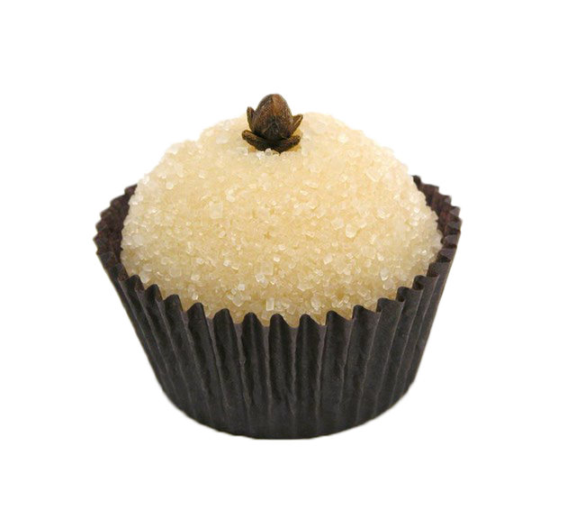

Beijinho Tradicional

Ingredientes
- 1 lata de leite condensado.
- 85 g de coco ralado
- 1 colher de sopa de manteiga ou margarina
- Açúcar para enrolar
Modo De Preparo
- Coloque em uma panela funda o leite condensado o coco e manteiga.
- Leve ao fogo e mexa sem parar até desgrudar da panela, cuidado para não passar do ponto, senão ele fica duro.
- Deixe esfriar, enrole com as mãos untadas e passe no açúcar.